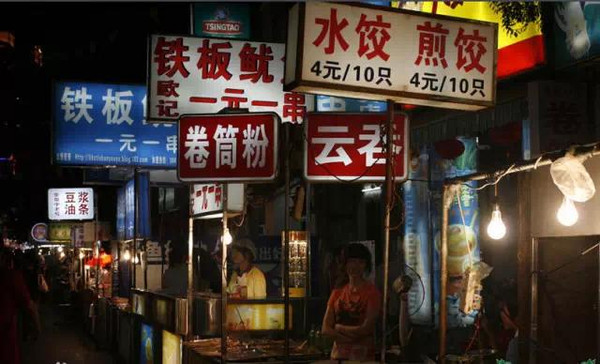
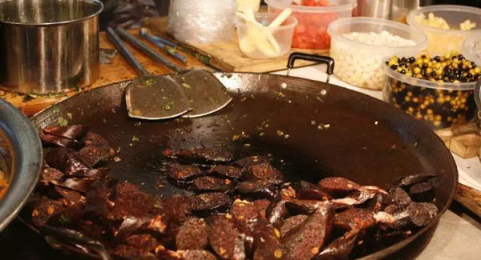
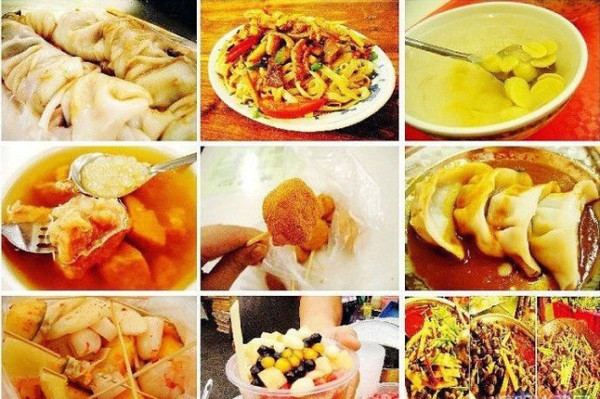
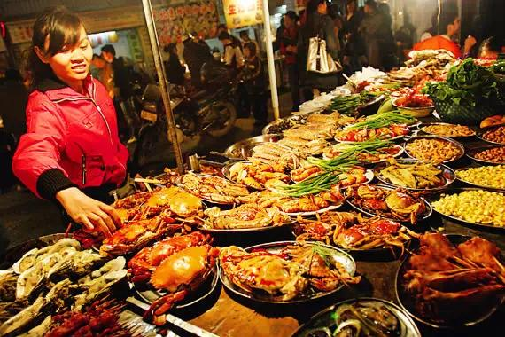
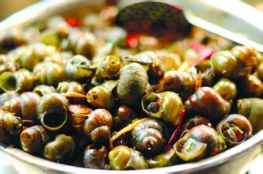
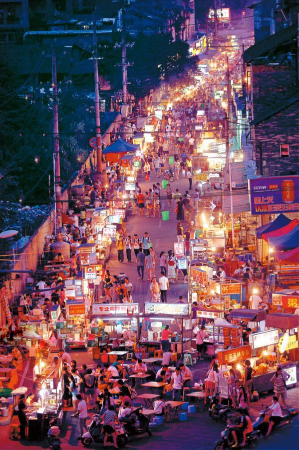
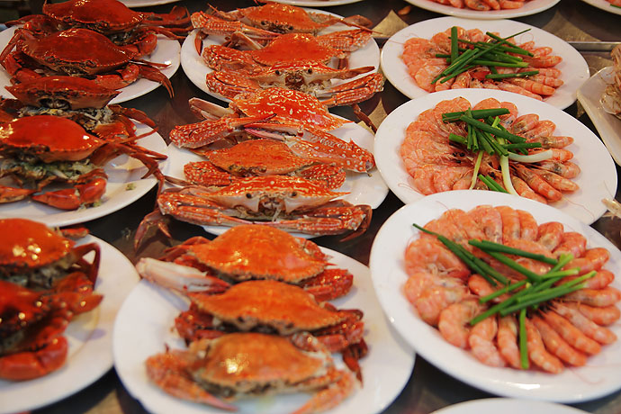

南宁俗话说“英雄难过美人关，美女难过酸野摊”正应征了中山路的美食繁多、美味的映象！
夜晚很多小摊贩在街道两边，类似步行街（不过南宁城管太可怕白天一般木有！）

不知道是什么鬼^_^

女生大多数爱吃的甜点小吃嘻嘻

各种海鲜，有钱的话吃到你想吐O(∩_∩)O哈哈~

田螺，一般人不会吃哈哈哈(∩_∩)

虽然白天看起来破破旧旧的街道灯光点缀起来还是蛮好看的

码得整整齐齐的海鲜，真是棒极了！

南宁比较有名的还有老友粉